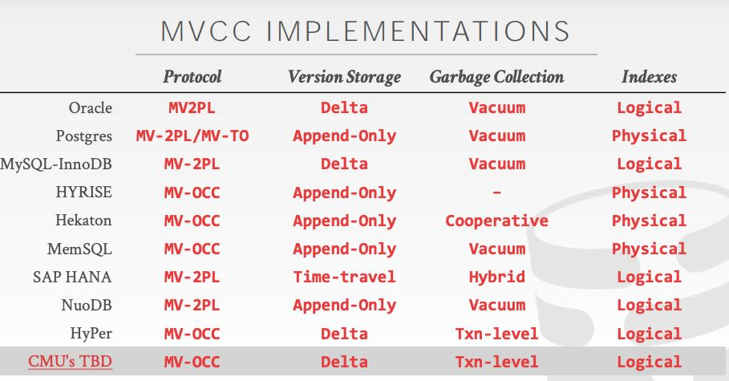

CMU DB Multi-Version Concurrency Control
MVCC不仅仅是个CC，具体的CC实现是用的还是前面几节讲的内容。除此之外好包括：版本管理，GC，以及索引管理。
Multi-Version Concurrency Control (MVCC) is a larger concept than just a concurrency control protocol. It involves all aspects of the DBMS’s design and implementation. MVCC is the most widely used scheme in DBMSs. It is now used in almost every new DBMS implemented in last 10 years. Even some systems (e.g., NoSQL) that do not support multi-statement transactions use it.
There are four important MVCC design decisions:
- Concurrency Control Protocol
- Version Storage
- Garbage Collection
- Index Management
我看的是2019年的课程，这几节课都不是Andy讲的（回家生孩子了），讲师讲解感觉有点枯燥。后面最好还是看看2020/2021年的课程。听下来感觉没有什么太多的东西，都是些概念性的东西。
版本存储（version storage）有下面三种方式：
- append-only. 把多个版本都存储在main table里面
- time-travel. 将更新的版本存储在private table, 事务完成之后写回main table. 但是更新版本是全量
- delta. 类似上面time-travel, 但是使用的是增量存储。写入快，但是读取慢。
GC实现有下面两种方式，我觉得是按照角色划分的：
- tuple-level GC. 针对不可用的tuple进行回收，通常由单独的工作线程执行（前后台都行）。
- txn-level GC. 事务自己进行回收。事务完成之后决定自己覆盖的哪些tuples是不可见的，由事务本身进行回收。
索引管理 (index management) 对于主索引只需要一直引用到tuple最新的version就行，而对于二级索引则有两种方式：a. logical pointers. (二级索引找到tuple id, 然后tuple id有这个tuple的version chain). b physical pointers （二级索引可以找到主索引，主索引再找到这个tuple version chain） 两种方法取决于二级索引的实现方式。
